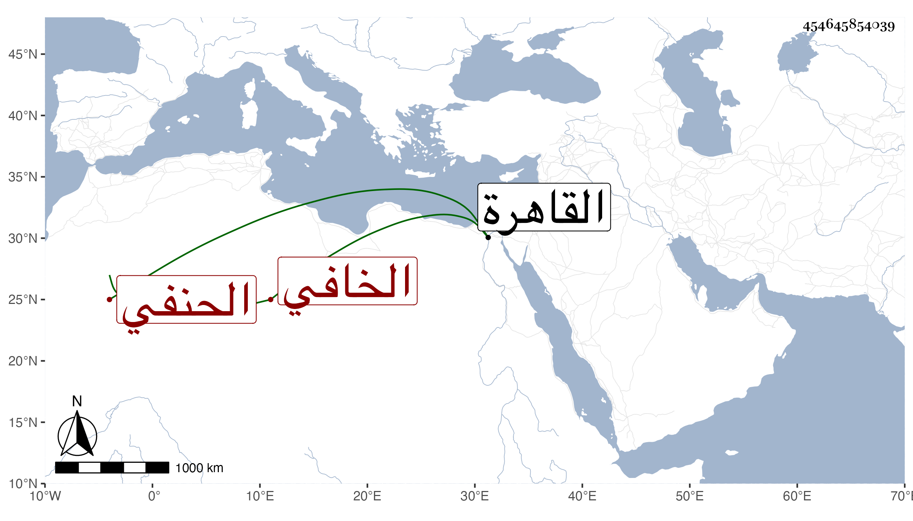

0902Sakhawi.DawLamic.ITO20230111-ara1.EIS1600.454645854039
Biography ID: 454645854039
408
محمد الشمس الخافي الحنفي قدم القاهرة في سنة خمس وأربعين للحج فتلقاه الكمال بن البارزي وصهره الجمال ناظر الخاص وطلع إلى السلطان فأكرمه جدا وأجرى عليه الرواتب إلى أن خرج إلى الحج وكذا اجتمع بولده الناصري محمد وأضافه مرارا وكان الكافياجي يثني على علمه ويصفه بالجلالة بل كان عين مملكة شاه رخ بن تيمورلنك وولده .
